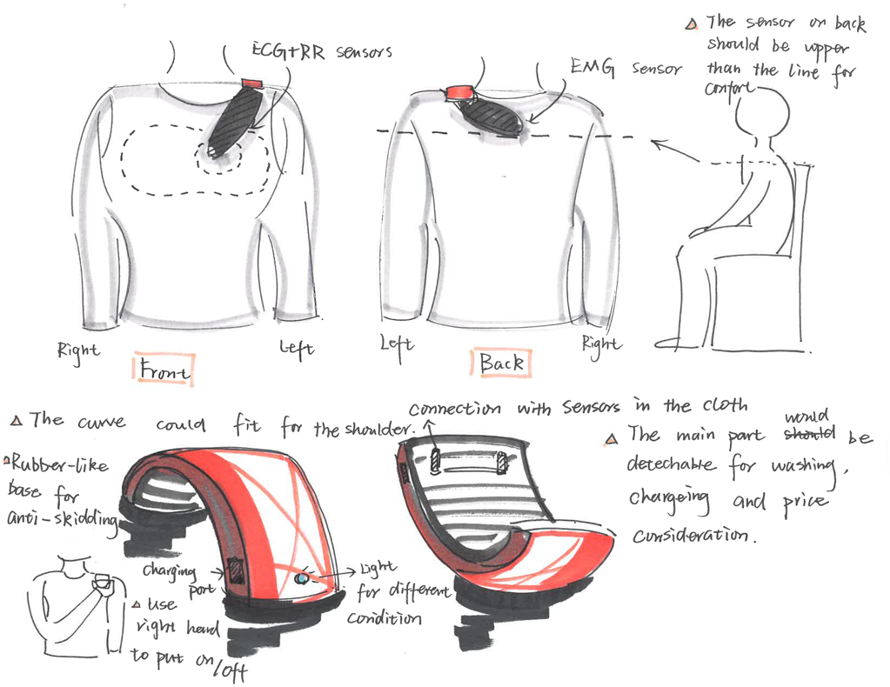
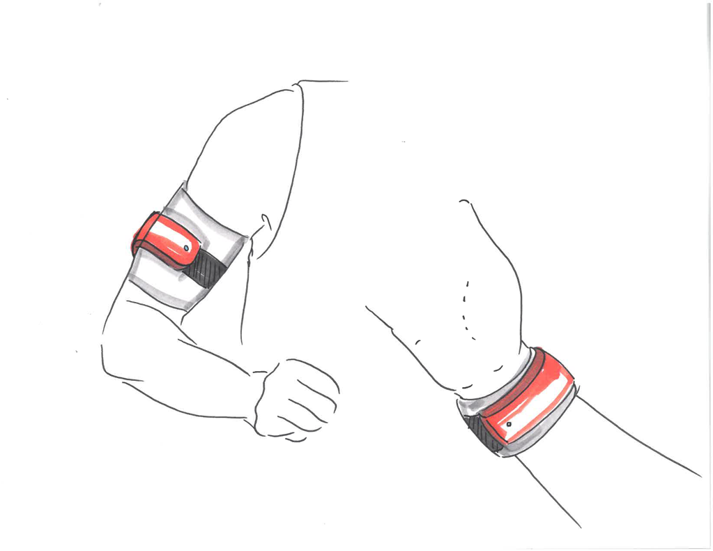
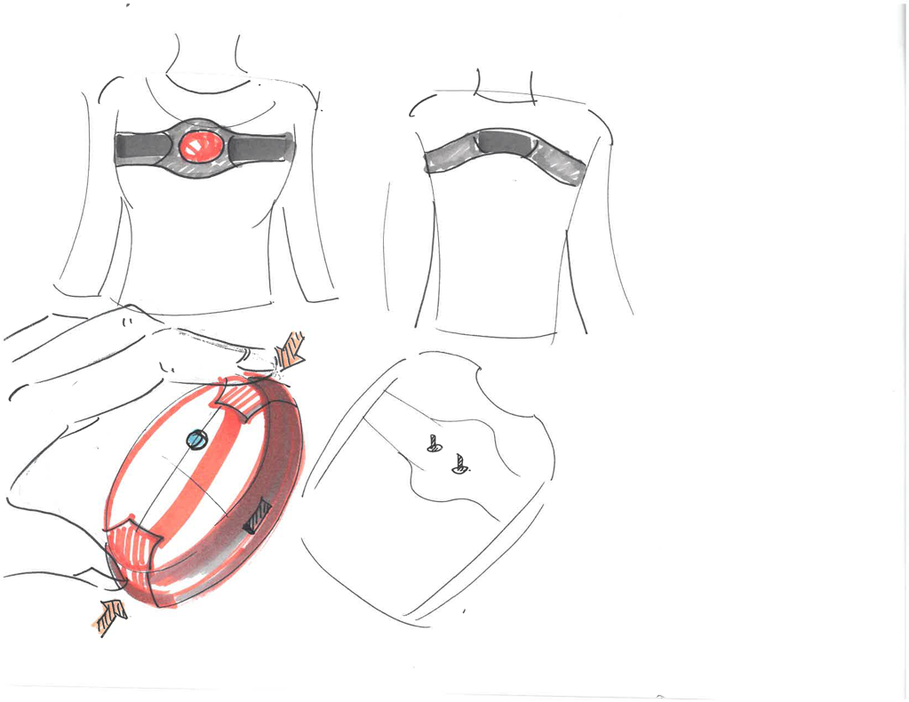
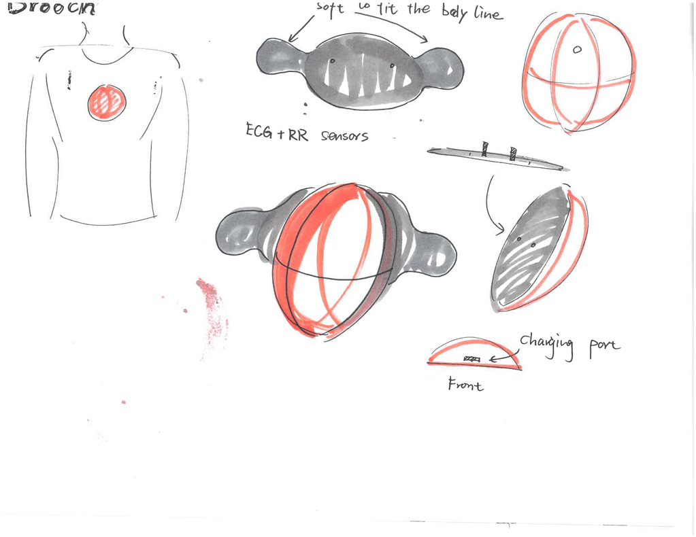

Identify key stakeholders
Who are the stakeholders?
Summary
In stakeholder map, I realized that there is also a need for a connection between main caregivers and secondary caregivers since parents may need to send calming tips to other caregivers when they are taking care for children.
Benchmark existing solution
What is the competitive landscape?
There is a mental model for addressing meltdown is from managing factors or triggers to predicting potential stressful condition finally preventing a meltdown.
There are some conventional and new methods for preventing a meltdown.
Conventional methods:
(1) Relieving them by giving a hug or hug simulation
(2) Using different things to minimize or get rid of the triggers in their life
(3) Using earplugs or headphones to obstruct the sounds
(4) Distracting them by iPad
(5) Wearing loose clothes.
For now, there is no technology solution specifically focusing on managing or predicting meltdown, but the caregivers do have some conventional methods like writing a journal to record triggers or emotional changes in a day.
Some specific solutions for Hypersensitivity / Sensory Overload:
(1) Fits of Rage or Angst (Cost of living is $1.4 to 2.4 million, ~$60,000 annually, 3 times more than the average person)
(2) Current Treatments
(3) Occupational Therapist, $50-$100/hour
(4) Weighted Vest, $70
Unconventional solutions:
Striking competitor-empatica
Similarities:
Both use biometrics like ECG, EDA to detect and measure emotional changes.
Both have wearable apparel and mobile app to provide service.
Differences:
Gaia doesn't limit the form of design and empatica is a wrist band/watch.
Gaia has better mobile app support for reports checking and communicating.
Summary
The conventional methods focus more on calming/relieving stage rather than predicting and preventing. Basically, the mearsument of emotion needs to base on biomedical signals or biometric data.
What are the knowledge gaps?
Analyze the opportunities?
1. Knowledge gaps we could bridge
Lacking of understanding of biometrics
Caregivers only have access to information professional caregivers provide to them. Even if there are a bunch of products developed based on biomedical technology, they don't know those could help to understand the factors behind meltdown triggers.
2. Concerns we could eliminate
(1) Data and information privacy
Some caregivers concern about the privacy of their children so they are unwilling to trust biomedical technology could help them.
(2) Untrustful stability
In the common mind, now biotech is still in an experimental stage so they don’t want to experiment.
(3) The improvement couldn't be clear demonstrated.
(4) Everyone has a different standard of the condition
Like baseline or difference sensitiveness, so it’s hard to measure and manage by one model
3. Hypothesis
(1) Potential Customers
Parent(s) of 700k children with autism living in the US (between the ages of 3 and 12) that cannot live an independent life
(2) Potential Market Estimation
Since 2000, there has been a 119% increase in the prevalence of autism with ~3.5 million individuals in the US today. There is an addressable market of $300,000,000, and by year five we plan to capture 1% of it and year ten we look to control 50%.
Summary
When using technology to make product design, for typical consumers, making technology understandable is very important. And also for training or habits building product, showing a clear improvement is also a big part for caregivers to acknowledge their commitment.
Unmet stakeholder needs
What are customer choice drivers?
Smart shirt and apparel design consideration:
1. Washability
2. Softness
3. Strechyness
4. Wearability
Biomedical technology consideration:
1. Mix and match solutions to customize for child’s needs
2. Parents are likely to keep trying new technologies if they see improvements with their child
3. Parents have some habits like writing journals for tracking changing or improvement
4. Parents are willing to use a new product continuously if they got an improvement could be measured
Product accessibility consideration:
Parent(s) are who cannot afford a caretaker, can afford our product
Emotional consideration:
1. Meltdowns result in physical harm to child, parent(s), or caregivers
2. Parent(s) are comfortable with using our product without concern
3. Parents are more likely to try a new product if they have a better connection with other caregivers
4. If the improvement is going back and forth, it would be frustrating for parents and caregivers.
Summary
For the apparel design, the adaptbility is important since they have consideration of if the apparel is affordable or not in a long term, when they choosing wearbales.
White Space opportunities
Identify differentiation opportunities?
The product we are going to develop is a sensor embedded IoT compression shirt (smart apparel) with an associated mobile application to show emotional changes based on zones of regulation to provide early detection of the emotional state of an individual with autism in order to be proactive of meltdowns for the autism spectrum disorder (ASD) community.
Focused differentiation points:
1. Meltdown Management
Matching sensitivity with occuring of meltdown
Hypersensitivity is a common trait of those with autism; the individuals are prone to fits of rage or angst when triggers occur. The most common method to combat this utilizes a weighted vest, typically used in conjunction with an assistant aid; the idea is to put pressure on the individual to make them feel grounded, mimicking a hug. The issues lie in a heavy-weight of the vest, unsightly appearance, and inconvenience.
2. Meltdown Prediction
Clear demonstration by using the Zones of Regulation
There is a common understanding that If we are able to recognize when we are becoming less regulated, we are able to do something about it to manage our feelings and get ourselves to a healthy place. This comes naturally for some, but for others(people with autism) it is a skill that needs to be taught and practiced. This is the goal of The Zones of Regulation (or Zones for short).
The Zones is a systematic, cognitive behavioral approach used to teach self-regulation by categorizing all the different ways we feel and states of alertness we experience into four concrete colored zones. The Zones framework provides strategies to teach students to become more aware of and independent in controlling their emotions and impulses, manage their sensory needs, and improve their ability to problem solve conflicts.
The color could be more direct and clear to show their current status without more learning cost.
Summary
There is no current solution focusing on matching factors caused a meltdown with a child with autism's sensitivity. If parents could manage meltdown causes, it would be helpful to reduce the exposure from dangerous elements and predict or prevent a meltdown.
Value creation opportunities
Differentiation strategy?
BUSINESS MODEL
1. The Smart wear Apparel (Shirt):
All active electronics are contained within a single waterproof unit
2. Phone Application to provide daily supporting service
3. Monthly Subscription Phone App Bundle Packages
(1) Extra Data Storage
(2) Group User Monitoring
(3) Real-Time Aide Monitoring
4. Sales Made At Conference Demonstrations Or Online Sales, B2C
5. Proprietary packet scheme to protect sensitive user information
Meltdown Prediction
Justification by Machine Learning
Through machine learning, the shirt will generate a threshold for of the metrics that are indicative of stress. Once the threshold baseline is surpassed the device initiates compression of the user, simulating a hug.
Meltdown Managment
Habit-building:
In addition, Gaia will increase the independence of the user, eliminating the need for an aide during day-to-day situations, such as work and school, thus reducing the financial burden on the family. The newfound independence will give the families of users peace of mind that Gaia provides support when they are unavailable.
Meltdown Managment
Clear daily/weekly/monthly Reports:
The mobile application provides a real-time display of the stress level of the user with a written queue to inform the user of what is happening. The application gives the user to manually initiate the compression, to strengthen the ability for the system to identify when the user is stressed.
Summary
By habits building based on data collected by sensors and clear reports to show exact improvement or fluctuations, children would also learn and be willing to self-help and self-control based on accurate feedback and cause analysis.
What do you not change
Commonality Strategy?
Multi-measurement:
The smart apparel will monitor biometrics of a user such as heart rate, skin conductivity, blood pressure, and other such vitals to determine if the user is beginning to experience high levels of stress.
Discreetness:
The benefits of Gaia lie in that it can be worn under clothing to avoid attention from peers.
Summary
I do believe the common feature shared with other product couldn't be discarded since like multi biometrics collection could show a clearer difference of scare and stress. And discreetness is also a crucial consideration in product design depends on whether the users want to reveal their identity or not.
Differentiation by Design
What are your competitive advantages?
Gaia is differentiated because it gets rid of the guesswork and for constant supervision need, providing improved and more consistent tracking.
Our product different from current solutions because for individuals with autism and their caregivers, Gaia wearables could track, detect, and reduce the frequency of meltdowns through biometric stress monitoring and management.
Device Design
Adapatibility
= acommondate under different context = buy less piece = lower cost for entire service
Wearability
= whether it is comfortable = whether it could provide continuous tracking to make sure a more accurate prediction accuracy
- 
- 
- 
- 
App Design
Calendar
Customization metrics = More accurate by machine learning
Trend and reports
We solve this problem by providing detection and notification of the early onset of meltdowns. The product I’m designing is smart apparel to parents of children with autism that is concerned with their child’s well-being. Our solution provides a cost-effective, real-time stress detection and mitigation system with automated and hands-free biosensing technology to empower individuals with autism.
References
Percentage of children born with autism in the US by year: Centers of Disease Control and Prevention – 2014 https://www.cdc.gov/ncbddd/autism/data.html Number of children born in the US by year: Centers of Disease Control and Prevention - 2017 National Vital Statistics Reports, Volume 66, Number 1, January 5, 2017 https://www.cdc.gov/nchs/data/nvsr/nvsr66/nvsr66_01.pdf 2010 Sixth International Conference on Intelligent Information Hiding and Multimedia Signal Processing [1]. - Heart Rate Variability (HRV) and Galvanic Response (GSR) as primary measures. - Found 95% accuracy using these metrics. 2013 IEEE 26th International Symposium on Computer-Based Medical Systems [2] - Measured stress detection from speech and GSR signals - Found 92% accuracy in generalizable stress detection - Found 70% accuracy in differentiating between light and heavy workloads Army Research Laboratory [3] - Used GSR as a measure of soldier stress while in the field - Compared GSR detection to conventional subjective measures (surveys, salivary amylase) - Reasonable correspondence of GSR compared to subjective measures http://www.zonesofregulation.com/learn-more-about-the-zones.html